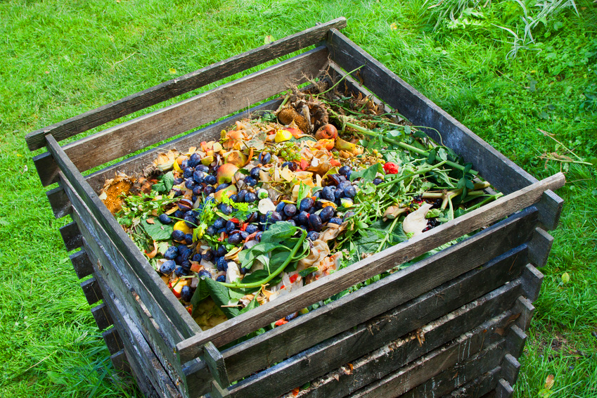

La composta casera es una de las mejores alternativas si deseas cuidar de tu jardín de una mejor manera y también, aprovechar los desechos orgánicos que generas en tu hogar.
Además de aportar nutrientes a la tierra, la composta casera ayuda a controlar la erosión, retener la humedad y permitir el paso del aire, de una forma mucho más amigable para el medio ambiente que el uso de fertilizantes químicos.

¿Qué materiales orgánicos se recomiendan para hacer composta casera?
No todos los materiales son aptos para hacer composta casera, ya que muchas de ellas pueden resultar tóxicas, atraer animales indeseados y generar mal olor. Por ello, las materias orgánicas recomendadas son:
Materiales marrones– Restos de madera – Hojas secas y perennes cortadas en trozos – Pasto cortado, seco de preferencia – Restos de podas
Materiales verdes– Cítricos, frutas y verduras, ya sean cáscaras o pedazos pequeños – Restos de té y las borras del café – Estiércol de animales como caballos, vacas, ovejas o pollos
Además de las materias orgánicas mencionadas, existen ciertos microorganismos fundamentales, como las lombrices, que son parte del proceso de composta natural.
Por otro lado, los residuos que debes evitar para hacer composta casera son:
– Carne, huesos o pescado – Las cenizas del carbón y aserrín de maderas tratadas – Restos de comida cocida – Excrementos de animales carnívoros como los gatos o los perros – Aceites y grasas – Materiales inorgánicos como los plásticos, las latas o los metales – Plantas enfermas – Productos lácteos como la leche, yogur, queso, etc.
Pasos para preparar tu composta
1. Prepara tu contenedor o zanja para realizar la composta.
2. Llena el contenedor o la zanja con una mezcla equilibrada de materiales. Por cada capa de material verde, va una de materias marrones. Es importante comenzar con una capa de materia marrón de 20 a 30 centímetros, pues esta ayuda a mantener el aire suficiente en la parte inferior.
3. También, puedes añadir un poco de tierra entre cada capa, ya que esta contiene bacterias necesarias para la descomposición de la materia.
4. Gira la mezcla regularmente con ayuda una pala. Para ello, es recomendable sacar la composta del contenedor, darle vueltas y colocarlo de nuevo en el contenedor.
5. Rocía con agua de manera regular para evitar que se seque, sin ahogar la mezcla. Puedes remover la mezcla con la pala para proporcionar aire.
6. Al cabo de 4 a 6 meses, tu composta estará lista pero, ¿cómo saberlo? Cuando el color de esta sea marrón oscuro, no haya lombrices y el olor no sea fuerte y sea parecido al del bosque, es un hecho que la composta está lista para colocarse en el suelo.
7. Antes de colocarla en el suelo, puedes dejar reposar la composta unos días fuera del contenedor, así estará lista para abonar tus plantas con los mejores nutrientes.